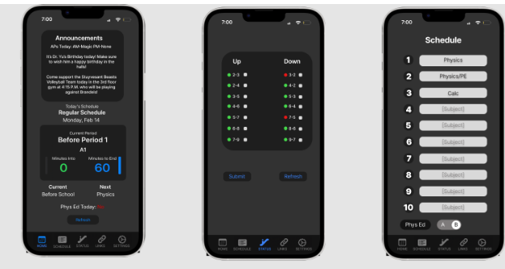

While many students enter senior year ready for college, a lot don’t have that kind of resources. We want to simplify the college process by creating short graphics that explain common college application items, like the Common App, QuestBridge, EA ED and REA, how to submit recommendation letters, how to add colleges to Naviance, FAFSA,
We want to have a shared Google calendar with deadlines for scholarships, colleges, and events. This can also work in conjunction with the morning announcements submissions
Morning announcements are traditionally a Senior Caucus thing. This year the Senior Caucus opened up Morning Announcers to the rest of the grade. There have been rumors mentioning wanting to go back to restricting it to only the caucus presidents and the SU president. The morning announcements are a fun way to hear your friends over the loudspeakers every morning. The Chen Karim ticket promises to continue allowing non SU seniors to volunteer to be morning announcers.
We will create a webpage on our website that shows the current estimate of the prom ticket price. The thermometer will update as we have fundraisers, reflecting the progress towards the final ticket price.
Since COVID, the class mnemonic cubes have been generally forgotten about or filled over the summer. We would like to bring it back to a class-wide decision and also invite seniors on stage to fill it
The Stuy Schedule App is a SU IT project passed down from year to year. This year it was passed down to Anthony Chen who plans to add many features, such as a live escalator status. The Chen-Karim ticket is the only ticket that can promise maintenance and new features.
We will continue to develop StuyCompare.Live to facilitate schedule sharing and help students find others in their classes. Our goal is to provide a seamless and efficient platform for student interactions.
The Senior Grad Packages every year are always very plain and expensive. We want to offer an option where people who don’t need or want to purchase a cap and gown can still purchase the Class of ‘24 merch. We’d also like to create more varieties of merch, not just the traditional t-shirt. Like bracelets and beanies.
There were plans to repaint the Sophomore Bar that ended up falling through, but then the Class of ‘25 got to repaint the bar this year. We would like to also repaint the Senior Bar and leave a mark on the school from the Class of ‘24.
We aim to promote literacy and support local communities through the book drive initiative.
We believe in the value of online events and their positive impact on student well-being.
We will work on simplifying and improving the process of purchasing prom tickets to ensure a smooth and hassle-free experience for all seniors.
We will establish a better relationship with the Stuyvesant Indicator, working together to promote Senior Spirit Days and other important initiatives. Together, we can enhance the student experience and school spirit.
We want to create a memorable and inclusive yearbook experience for all seniors.